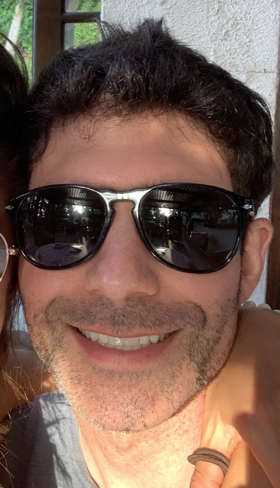

About Me
Hi I'm Jared, I'm from Los Angeles, CA. I received my bachelor's degree from CU Boulder in 2011 and started working with my dad at Avon Rent A Car/Truck/Van, a company he founded almost 42 years ago. Four years later, I applied to business school and graduated in 2016 from Pepperdine University with an MBA and went back to work at Avon.
In my spare time, I like to write and record songs. Call of Duty, Grand Theft Auto, and Rocket League are some of my favorite video games. Top places that I've visited are Italy, Greece, Spain, South of France, Hawaii, Cabo San Lucas, Canada and Israel.